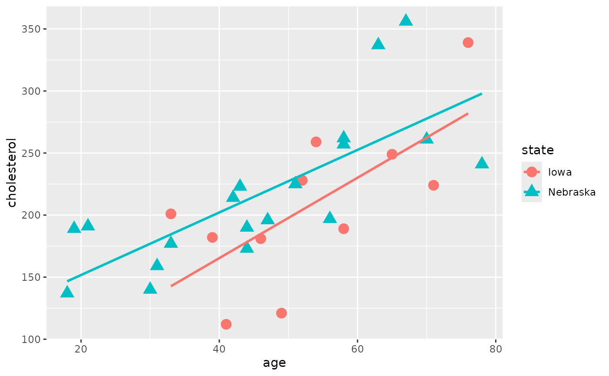

vignettes/session_lab.Rmd
session_lab.RmdLearning objectives
ggplot2
Exercises
cholesterol.tsv dataset into RFigure out this command using File - Import Dataset
library(readr) chol <- read_table2("cholesterol.tsv", col_types = cols(age = col_double())) summary(chol)
## cholesterol age state
## Min. :112.0 Min. :18.00 Length:30
## 1st Qu.:181.2 1st Qu.:39.50 Class :character
## Median :199.0 Median :48.00 Mode :character
## Mean :213.7 Mean :48.57
## 3rd Qu.:247.0 3rd Qu.:58.00
## Max. :356.0 Max. :78.00Take Data Science Module 1 “Data Visualization Basics” first if you aren’t familiar with ggplot2:
library(ggplot2) ggplot(chol, aes(x=age, y=cholesterol, shape=state, color=state)) + geom_point(size=4) + geom_smooth(method=lm, se = FALSE)

cholesterol as the outcome variable.
##
## Call:
## lm(formula = cholesterol ~ age * state, data = chol)
##
## Residuals:
## Min 1Q Median 3Q Max
## -73.480 -31.907 -4.303 22.829 85.833
##
## Coefficients:
## Estimate Std. Error t value Pr(>|t|)
## (Intercept) 35.8112 55.1166 0.650 0.52156
## age 3.2381 1.0088 3.210 0.00352 **
## stateNebraska 65.4866 61.9834 1.057 0.30045
## age:stateNebraska -0.7177 1.1628 -0.617 0.54247
## ---
## Signif. codes: 0 '***' 0.001 '**' 0.01 '*' 0.05 '.' 0.1 ' ' 1
##
## Residual standard error: 43.14 on 26 degrees of freedom
## Multiple R-squared: 0.5326, Adjusted R-squared: 0.4786
## F-statistic: 9.875 on 3 and 26 DF, p-value: 0.00016anova(fit)
## Analysis of Variance Table
##
## Response: cholesterol
## Df Sum Sq Mean Sq F value Pr(>F)
## age 1 48976 48976 26.3124 2.388e-05 ***
## state 1 5456 5456 2.9315 0.09877 .
## age:state 1 709 709 0.3809 0.54247
## Residuals 26 48395 1861
## ---
## Signif. codes: 0 '***' 0.001 '**' 0.01 '*' 0.05 '.' 0.1 ' ' 1fit1 <- lm(cholesterol ~ state, data=chol) fit2 <- lm(cholesterol ~ state + age, data = chol) anova(fit1, fit2)
## Analysis of Variance Table
##
## Model 1: cholesterol ~ state
## Model 2: cholesterol ~ state + age
## Res.Df RSS Df Sum of Sq F Pr(>F)
## 1 28 102924
## 2 27 49104 1 53820 29.593 9.361e-06 ***
## ---
## Signif. codes: 0 '***' 0.001 '**' 0.01 '*' 0.05 '.' 0.1 ' ' 1library(MASS) fit <- lm(cholesterol ~ age * state, data=chol) step <- stepAIC(fit, direction = "backward")
## Start: AIC=229.58
## cholesterol ~ age * state
##
## Df Sum of Sq RSS AIC
## - age:state 1 709.05 49104 228.01
## <none> 48395 229.58
##
## Step: AIC=228.01
## cholesterol ~ age + state
##
## Df Sum of Sq RSS AIC
## <none> 49104 228.01
## - state 1 5456 54560 229.18
## - age 1 53820 102924 248.22AIC = Akaike’s Information Criterion